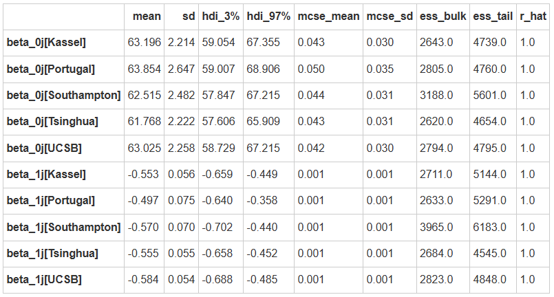
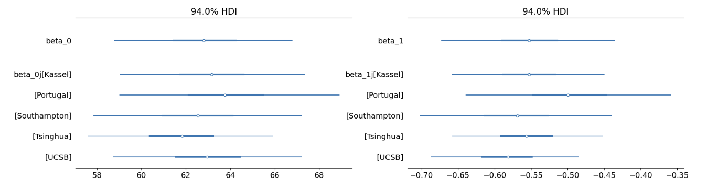

Model3: Hierarchical model with varying intercepts & slopes(变化截距和斜率模型)#
模型1 和模型2分别考虑了截距和斜率随着站点的变化，在模型3中将同时考虑截距和斜率在不同站点间的差异
prior
likelihood
分层模型与非池化模型的对比#
分层模型 |
非池化模型 |
|
|---|---|---|
相同 |
\(Y_{ij} \sim N(\beta_{0j}+\beta_{1j}X_{ij},\sigma_y^2)\) |
\(Y_{ij} \sim N(\beta_{0j}+\beta_{1j}X_{ij},\sigma_y^2)\) |
不同 |
\(\beta_{0j}\overset{ind}{\sim}N(\beta_0,\sigma_0^2)\) |
\(\beta_{0j}\overset{ind}{\sim}N(0,50^2)\) |
\(\beta_{1j}\overset{ind}{\sim}N(\beta_1,\sigma_1^2)\) |
\(\beta_{1j} \overset{ind}{\sim}N(0,5^2)\) |
|
\(\beta_0 \sim N(0,50^2)\) |
\(\sigma_y\sim Exp(1)\) |
|
\(\beta_1 \sim N(0,5^2)\) |
||
\(\sigma_0 \sim Exp(1)\) |
||
\(\sigma_1 \sim Exp(1)\) |
||
\(\sigma_y \sim Exp(1)\) |
在非池化模型中，截距、斜率和变异在不同站点间是不同的；
但在分层模型中，考虑了来自总体的的信息，即不同站点间的斜率/截距是从全局参数的斜率/截距中抽样的。
注意，在分层模型中一般不会假设变异会随着分组变量变化，这也是分层模型和非池化模型的重要区别。
# 定义函数来构建和采样模型
def run_var_both_model():
#定义数据坐标，包括站点和观测索引
coords = {"site": df_first5["Site"].unique(),
"obs_id": df_first5.obs_id}
with pm.Model(coords=coords) as model:
#定义全局参数
beta_0 = pm.Normal("beta_0", mu=0, sigma=50)
sigma_beta0 = pm.Exponential("sigma_beta0", 1)
beta_1 = pm.Normal("beta_1", mu=0, sigma=5)
beta_1_sigma = pm.Exponential("beta_1_sigma", 1)
sigma_y = pm.Exponential("sigma_y", 1)
#传入自变量、获得观测值对应的站点映射
x = pm.MutableData("x", df_first5.stress, dims="obs_id")
site = pm.MutableData("site", df_first5.site_idx, dims="obs_id")
#模型定义
beta_0j = pm.Normal("beta_0j", mu=beta_0, sigma=sigma_beta0, dims="site")
beta_1j = pm.Normal("beta_1j", mu=beta_1, sigma=beta_1_sigma, dims="site")
#线性关系
mu = pm.Deterministic("mu", beta_0j[site]+beta_1j[site]*x, dims="obs_id")
# 定义 likelihood
likelihood = pm.Normal("y_est", mu=mu, sigma=sigma_y, observed=df_first5.scontrol, dims="obs_id")
var_both_trace = pm.sample(draws=5000, # 使用mcmc方法进行采样，draws为采样次数
tune=1000, # tune为调整采样策略的次数，可以决定这些结果是否要被保留
chains=4, # 链数
discard_tuned_samples= True, # tune的结果将在采样结束后被丢弃
random_seed=84735,
target_accept=0.99)
return model, var_both_trace
# 注意，以下代码可能运行10分钟左右
var_both_model, var_both_trace = run_var_both_model()
pm.model_to_graphviz(var_both_model)
MCMC采样&后验参数估计
var_both_para = az.summary(var_both_trace,
var_names=["beta_0j","beta_1j"],
filter_vars="like")
var_both_para

# 设置绘图坐标
figs, (ax1, ax2) = plt.subplots(1,2, figsize = (20,5))
# 绘制变化的截距
az.plot_forest(var_both_trace,
var_names=["~mu", "~sigma", "~offset", "~beta_1"],
filter_vars="like",
combined = True,
ax=ax1)
# 绘制变化的斜率
az.plot_forest(var_both_trace,
var_names=["~mu", "~sigma", "~offset", "~beta_0"],
filter_vars="like",
combined = True,
ax=ax2)
plt.show()

可以看出5条回归线的斜率\(\beta_{1j}\)、截距\(\beta_{0j}\)都是不同的
\(\beta_{1j}、\beta_{0j}\)是在总体\(\beta_1、\beta_0\)基础上增加了一些变异
后验预测回归线
#定义函数，绘制不同站点下的后验预测回归线
def plot_partial_regression(data, trace, group_index):
# 定义画布，根据站点数量定义画布的列数
fig, ax = plt.subplots(1,len(data["Site"].unique()),
sharex=True,
sharey=True,
figsize=(15,5))
# 根据站点数来分别绘图
# 需要的数据有原始数据，每一个因变量的后验预测均值
# 这些数据都储存在后验参数采样结果中，也就是这里所用的trace
for i, group in enumerate(data["Site"].unique()):
#绘制真实数据的散点图
x = trace.constant_data.x.sel(obs_id = group_index[f"{group}"])
y = trace.observed_data.y_est.sel(obs_id = group_index[f"{group}"])
mu = trace.posterior.mu.sel(obs_id = group_index[f"{group}"])
ax[i].scatter(x, y,
color=f"C{i}",
alpha=0.5)
#绘制回归线
ax[i].plot(x, mu.stack(sample=("chain","draw")).mean(dim="sample"),
color=f"C{i}",
alpha=0.5)
ax[i].set_title(f"Slope: {var_both_para.loc[f'beta_1j[{group}]']['mean']}\nIntercept: {var_both_para.loc[f'beta_0j[{group}]']['mean']}",
fontsize=12)
#绘制预测值95%HDI
az.plot_hdi(
x, mu,
hdi_prob=0.95,
fill_kwargs={"alpha": 0.25, "linewidth": 0},
color=f"C{i}",
ax=ax[i])
# 生成横坐标名称
fig.text(0.5, 0, 'Stress', ha='center', va='center', fontsize=12)
# 生成纵坐标名称
fig.text(0.08, 0.5, 'Self control', ha='center', va='center', rotation='vertical', fontsize=12)
# 生成标题
plt.suptitle("Posterior regression models(varing slope and intercept)", fontsize=15, y=1.05)
sns.despine()
plot_partial_regression(data=df_first5,
trace=var_both_trace,
group_index=first5_index)
组间方差与组内方差
在这个模型定义中，组间方差来自beta_0_offset、beta_1_offset，组内方差来自sigma_y
# 提取组间和组内变异
calculate_var_odds(var_both_trace)
被组间方差所解释的部分： 0.04137910554592596 被组内方差所解释的部分： 0.9586208944540742 组内相关： 0.04137910554592596
小结
现在，可以看到三种不同情况下的部分池化模型与非池化模型的后验预测回归线之间的差异。
从上到下依次为：非池化模型、部分池化模型（变化截距）、部分池化模型（变化斜率）以及部分池化模型（变化截距和斜率）。
将非池化模型和三种部分池化模型对比可以看出：
当被试量较少时（绿色图），三种部分池化模型的预测趋势都是一致的，并且都是和其他站点的趋势一致，体现出分层模型的“收缩”特性。相比之下，非池化模型则表现出完全相反的预测趋势，这里很好地体现了模型选择对极端数据预测的影响。
评估后验预测#
在之前的课程中，介绍过对后验预测结果进行评估的两种方法：
一是MAE，即后验预测值与真实值之间预测误差的中位数，二是within_95，即真实值是否落在95%后验预测区间内
在这里调用之前写过的计算两种指标的方法，评估四个模型的后验预测结果
# 进行后验预测
complete_ppc = pm.sample_posterior_predictive(complete_trace,
model = complete_pooled_model,
random_seed=84735)
var_inter_ppc = pm.sample_posterior_predictive(var_inter_trace,
model = var_inter_model,
random_seed=84735)
var_slope_ppc = pm.sample_posterior_predictive(var_slope_trace,
model = var_slope_model,
random_seed=84735)
var_both_ppc = pm.sample_posterior_predictive(var_both_trace,
model = var_both_model,
random_seed=84735)
绝对指标：MAE (Median Absolute Error)#
# 定义计算 MAE 函数
from statistics import median
def MAE(model_ppc):
# 计算每个X取值下对应的后验预测模型的均值
pre_x = model_ppc.posterior_predictive["y_est"].stack(sample=("chain", "draw"))
pre_y_mean = pre_x.mean(axis=1).values
# 提取观测值Y，提取对应Y值下的后验预测模型的均值
MAE = pd.DataFrame({
"scontrol_ppc_mean": pre_y_mean,
"scontrol_original": model_ppc.observed_data.y_est.values
})
# 计算预测误差
MAE["pre_error"] = abs(MAE["scontrol_original"] -\
MAE["scontrol_ppc_mean"])
# 最后，计算预测误差的中位数
MAE = median(MAE.pre_error)
return MAE
# 定义
def counter_outlier(model_ppc, hdi_prob=0.95):
# 将az.summary生成的结果存到hdi_multi这个变量中，该变量为数据框
hdi = az.summary(model_ppc, kind="stats", hdi_prob=hdi_prob)
lower = hdi.iloc[:,2].values
upper = hdi.iloc[:,3].values
# 将原数据中的自我控制分数合并，便于后续进行判断
y_obs = model_ppc.observed_data["y_est"].values
# 判断原数据中的压力分数是否在后验预测的95%可信区间内，并计数
hdi["verify"] = (y_obs <= lower) | (y_obs >= upper)
hdi["y_obs"] = y_obs
hdi_num = sum(hdi["verify"])
return hdi_num
# 将每个模型的PPC储存为列表
ppc_samples_list = [var_inter_ppc, var_slope_ppc, var_both_ppc]
model_names = ["变化截距", "变化斜率", "变化截距、斜率"]
# 建立一个空列表来存储结果
results_list = []
# 遍历模型并计算MAE和超出95%hdi的值
for model_name, ppc_samples in zip(model_names, ppc_samples_list):
outliers = counter_outlier(ppc_samples)
MAEs = MAE(ppc_samples)
results_list.append({'Model': model_name, 'MAE':MAEs, 'Outliers': outliers})
# 从结果列表创建一个DataFrame
results_df = pd.DataFrame(results_list)
results_df
Model |
MAE |
Outliers |
|---|---|---|
变化截距 |
3.992812 |
18 |
变化斜率 |
4.064203 |
11 |
变化截距、斜率 |
4.059160 |
11 |
相对指标：ELPD-LOO#
从模型比较的结果，可以发现：
同时包含变化截距和变化斜率的模型(model3)是最优模型，对应了假设3（H3）。
此外，所有模型的 elpd 都非常接近 (考虑到 se大于为15~16)，因此，模型比较的结果只能作为参考，更重要的是通过后验预测检验模型的性能。
模型假设：
H0(model 0)，普通线性模型，仅考虑压力对自我控制的影响。
H1(model 1)，变化截距模型，在模型0的基础上考虑自我控制在不同站点的变化。
H2(model 2)，变化斜率模型，在模型0的基础上不同站点间的压力影响的变化。
H3(model 3)，变化截距和斜率模型，结合模型1和模型2，同时考虑站点对自我控制以及压力影响的变化。
pm.compute_log_likelihood(var_inter_trace, model=var_inter_model)
pm.compute_log_likelihood(var_slope_trace, model=var_slope_model)
pm.compute_log_likelihood(var_both_trace, model=var_both_model)
comparison_list = {
"model1(hierarchical intercept)":var_inter_trace,
"model2(hierarchical slope)":var_slope_trace,
"model3(hierarchy both)":var_both_trace,
}
az.compare(comparison_list)
可以看出，model3是最优的，能够更好地捕捉数据的特点
在实际的研究中，常见的是model3和model1，而仅变化斜率的model2很少见。
预测新站点的数据#
可以根据当前的分层模型对新组别的数据进行预测，如”Zurich”站点
在pymc中，只要在
pm.sample_posterior_predictive中传入模型MCMC后验参数采样结果，即可以在该模型的基础上对新数据生成预测预测结果储存在
.predictions中
# 选择站点为"Zurich"的数据
new_group = df_raw[df_raw.Site=="Zurich"]
# 生成被试索引
new_group["obs_id"] = range(len(new_group))
# 生成站点索引
new_group["site_idx"] = pd.factorize(new_group.Site)[0]
new_coords = {"site": new_group["Site"].unique(),
"obs_id": new_group.obs_id}
with pm.Model(coords=new_coords) as hier_pred:
#定义全局参数(这部分没有改变)
beta_0 = pm.Normal("beta_0", mu=40, sigma=20)
sigma_beta0 = pm.Exponential("sigma_beta0", 1)
beta_1 = pm.Normal("beta_1", mu=0, sigma=5)
beta_1_sigma = pm.Exponential("beta_1_sigma", 1)
sigma_y = pm.Exponential("sigma_y", 1)
#传入自变量
x = pm.MutableData("x", new_group.stress, dims="obs_id")
#获得观测值对应的站点映射
site = pm.MutableData("site", new_group.site_idx, dims="obs_id")
#注意：在这里需要传入一个新的参数名，因为传入的是一个新站点(除此处外，其余的定义变量名未发生改变)
new_beta_0_offset = pm.Normal("new_beta_0_offset", 0, sigma=1, dims="site")
new_beta_0j = pm.Deterministic("new_beta_0j", beta_0 + new_beta_0_offset * sigma_beta0, dims="site")
new_beta_1_offset = pm.Normal("new_beta_1_offset", 0, sigma=1, dims="site")
new_beta_1j = pm.Deterministic("new_beta_1j", beta_1 + new_beta_1_offset * beta_1_sigma, dims="site")
new_mu = pm.Normal("new_mu", new_beta_0j[site]+new_beta_1j[site]*x, dims="obs_id")
#似然
likelihood = pm.Normal("y_est", mu=new_mu, sigma=sigma_y, observed=new_group.scontrol, dims="obs_id")
# 进行后验预测估计，注意使用的是上一个模型的后验参数估计，partial_trace
pred_trace = pm.sample_posterior_predictive(var_both_trace,
var_names=["new_beta_0j","new_beta_1j"],
predictions=True,
extend_inferencedata=True,
random_seed=84735)
pred_trace
组内预测 vs 组外预测#
现在，对于原有站点和新站点，通过MCMC采样，得到了对应站点下对斜率和截距的估计
在原有站点中，斜率和截距的变量名为
beta_0j，beta_1j；在新站点中二者的名字则为new_beta_0j，new_beta_1j假设想知道当压力分数为40时，自我控制分数为多少，那么可以根据\(\mu_{ij}=\beta_{0j}+\beta_{1j}·40\)对该数据点的观测值做出预测
在MCMC采样中，对于每个站点，都生成了20000对参数估计值，\(\{ \beta_{0j}^{(i)},\beta_1^{(i)}\}\)。因此，代入X值后，对于每个站点都能获得20000个对应的预测值
#建立空dataframe，储存后验预测的结果
col = df_first5["Site"].unique()
pred_result = pd.DataFrame(columns=col)
#对每一个站点，提取后验参数的结果代入公式计算，并将计算结果存储在数据框的不同列
for site in df_first5["Site"].unique():
pred = (40 * (var_both_trace.posterior['beta_1j'].sel(site = f"{site}")) +\
(var_both_trace.posterior['beta_0j'].sel(site = f"{site}"))).stack(sample=("chain","draw")).values
pred_result[site] = pred
#对于新站点，同样提取对应的参数并代入公式计算，将结果存在新列中
pred_trace = pred_trace.predictions.stack(sample=("chain","draw","site"))
new_group_pred = (40 * (pred_trace['new_beta_1j']) + (pred_trace['new_beta_0j'])).values
pred_result[new_group["Site"].unique()[0]] = new_group_pred
pred_result
绘制预测密度分布图
最后，我们绘制每个站点的预测结果分布
可以看到，数据点较多的站点预测的结果比较集中，数据点较少的站点预测的结果比较分散
新站点的预测结果变异性是最大的
# 根据列数定义画布的行数
fig, ax = plt.subplots(len(pred_result.columns),1, figsize = (8,8),
sharex=True,
sharey=True)
# 对于每一个站点，绘制其预测结果的密度分布图
for i,site in enumerate(pred_result.columns):
az.plot_kde(pred_result[site].to_numpy(),
fill_kwargs={"alpha": 0.5},
quantiles=[.25, .75],
ax=ax[i])
#设置y轴标题和刻度
ax[i].set_ylabel(f'{site}', rotation=0, labelpad=40)
ax[i].set_yticks([])
#设置x轴范围
plt.xlim([20,60])
#设置标题
plt.suptitle("Posterior predictive models for Self Control(X = 40)",
y=0.95,
fontsize=15)
sns.despine()
相对于组外预测，组内预测的不确定性更小。由于我们在最开始建模的时候完全没有关于新站点“Zurich”的任何信息，因此在对该站点进行预测时不确定性很大。